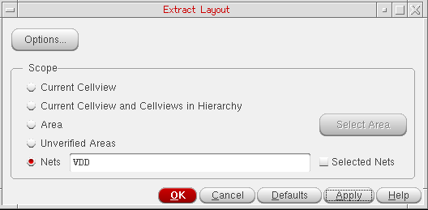

Extracting Connectivity by Nets
Connectivity extraction by a net (or nets) lets you limit the scope of extraction to a specified net or a set of nets. You can type in the net names directly in the Nets field or choose the Selected Nets check box in the Scope group box to enable extraction for all the nets already selected.
Alternatively, you can use the lceExtractNet and lceExtractNets SKILL functions, as appropriate, to enable extraction by nets.
- The net names specified in the Nets field should be space separated.
- Choosing Selected Nets overrides any net names already specified and performs the extraction on all the selected nets.
To enable net-based connectivity extraction:
-
From the CIW, open a layout cellview and choose Connectivity – Extract Layout.
The Extract Layout Form form is displayed.
 - Set the Scope to Nets to enable controls for extraction by nets. To extract connectivity only for specific nets, type the net names in the associated field. Keep the net names space separated.
- Choose the Selected Nets check box to extract connectivity for all the selected nets. Selecting this option overrides any net names, if specified, in the Nets field and enables extraction for all the selected nets.
- Click OK or Apply to extract connectivity for nets.
Connectivity extraction is performed for nets and the results are displayed in the CIW.
Related Topics
Return to top